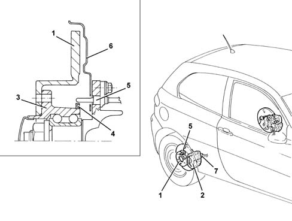

3310B REAR DISC BRAKES
- Path
- Descriptions > 33 BRAKING SYSTEM > 3310 DISC BRAKES > 3310B REAR DISC BRAKES
- Kind
- system description
- Applies to
- engines: 1.6 TS, 2.0 TS; all production periods
- Interactive page
- https://sloeber94.github.io/elrnDB-a147/en/#/3022478
Applies to: engines: 1.6 TS, 2.0 TS; all production periods
CONSTRUCTION FEATURES
On all versions, the rear wheels are fitted with a brake system with solid discs and LUCAS floating aluminium calipers with automatic play take-up.
The brake caliper mechanism is operated mechanically by means of the handbrake lever [3340 A(B.S. ANTI-LOCK BRAKING SYSTEM .)].
The hub outer race is fitted with a multipolar magnetic ring that indicates wheel movements to the active ABS sensor [3340 A(B.S. ANTI-LOCK BRAKING SYSTEM .)] secured to the suspension arm.

1 - Brake disc 2 - Brake caliper 3 - Hub outer race 4 - Multipolar magnetic ring 5 - ABS active sensor 6 - Guard 7 - Handbrake link anchorage